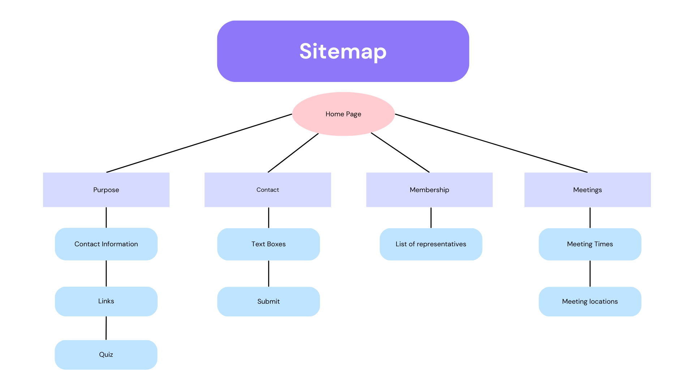

Design
This page aims to inform the user about how mobile-first design decisions were chosen to improve the functionality and responsiveness of the webpage.
The design I chose for this website, was a purple/white colour scheme. My design is not entirely cooperate, with a vibrant background of purple and pink lines, with mainly rounded corners; attempting to be friendly and vibrant. I also chose make a lot of my elements interactive with animations, making my website feel more alive and modern, as well as adding to the accessibility,
Mobile First Design Decisions
-
Default Styles
- This webpage uses default styles that ensure important elements of the webpage remain consistent across all resolutions, providing a similarly effective experience.
-
Mobile-First Media Query (min-width: 0px)
- In this media query, adjustments are made for small screens or mobile devices:
- The grid in `.grid-container` is set to have four columns, allowing 2 links on the navbar per row.
- The layout is adjusted for grid items (`.first`, `.second`, etc.) allowing each element to allign as I wish within the grid.
- The font size of `h1` is increased for better visibility on smaller screens.
- The layout of my quiz and footer is modified.
-
Tablet and Narrow Screen Media Query (min-width: 768px)
- In this media query, adjustments are made for tablets and narrow screens:
- Font size for `h1` is reduced compared to the mobile view.
- The quiz is given specific grid row and column placements.
- The layout of my comment form, and footer is modified.
-
Larger Screen Media Query (min-width: 1280px)
- In this media query, additional adjustments are made for larger screens:
- The number of columns in `.grid-container` is increased to six, allowing me to correctly centre my navbar elements.
- Font size for all elements is increased.
- The layout of my quiz, navbar, comment form, and footer is further modified.
Site Map
Images that describe the structure of my webpage, as well as key elements and features on each of my pages.

Sitemap for home, purpose, meeting, contact and membership.
Sitemap for footer, legal, design, and tesing.
Design Mockups
Images that describe the early drafts of how my website should look, for mobile, narrow and large devices. Design mockups are good to createe before implementing a website so you have a clear objective of what you want your website to look like.
Mockup for desktop
Mockup for narrow devices
Mockup for mobile devices
Design Reasoning
This section will illustrate certain tweaks and design decisions that I made during the process from mockup to final product
- Most of my content is centred in the middle of the website, this is to make it more readable and attractive to users, as they will most likely be facing the centre of their screen.
- My navbar changed the number of elements depending on the screen size, this is to make it easier to navigate the page on smaller screens, stopping them from accidentally reaching the wrong page.
- The footer of the page is deliberatley a different colour to most elements on the page, making it stand out so users know that this is the footer of the page
- Interactive elements are a large part of my website, making the website feel more advanced and modern
- Links and other significant peices of information stand out on the page, this draws the users attention, focussing them on the information that should be seen
- CSS grids have been used as they allow me a lot of control over how my elements look on different screens
- I have styled different lists in different ways, for some they are designed to look cleaner and clearly present information. For other I included bullet points so that the user is aware where one point ends and another starts
- I decided to make my colour scheme purple, because a lot of modern looking websites have purple and dark blue colour schemes and white for a contrast and modern look
- I used a custom background to have further control over how my website looks and feels
- I had to change my navbar part way through my implementation, as some of my elements were off centre, and some had to be moved to the footer. I also decided to make my mobile and narrow device implementation of the nabar the same, instead of narrow devices and desktop devices having the same implemenatation. The reason for this was becuase at lower resolutions in the narrow device range, my navbar buttons became too small, changing fixed this issue.